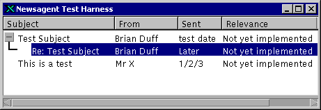

The first Screenshot I'm putting on the web page is of my Multi Column tree. This is used to provide a hierarchical view of discussion threads in a newsgroup. The columns are resizable, and parts of the tree can be expanded and collapsed by the user.
The first screenshot is the multicolumn tree with some test data under Windows 98.
The second screenshot is exactly the same tree, but running from a DEC Alpha machine on Digital UNIX, under X Windows.

OK, they aren't massively different, but that's the whole point. Java is platform independent, Java is cool!
The control uses the JTree Java bean from Swing 0.8. This bean doesn't have any support for multiple columns, so I had to improvise a little.
The column header is a simple component. It's not quite a bean, but it could easily be made into one. It is simply implemented as a panel which has the column headers manually drawn on it. The header can have any number of columns and the class user can specify and change the widths. A JTree object must be bound to the column header so that changes in the column widths can fire a repaint event on the JTree.
The JTree subclass is similarly bound to a column header, so it can determine the correct widths of columns. Swing allows the programmer to define a "renderer" for individual items in a JTree, so I created my own CellRenderer which simply paints a number of strings at positions determined by the column header control.
Swing has a few problems (it's in beta, after all), so I had to kludge a little to make things work. In particular, the mechanism whereby selected items are painted is particularly buggy. At one point, I had the renderer drawing a box the entire width of the screen, because the JTree was unaware of the fact that the Renderer components had changed size. I fixed this by drawing individual boxes for each clipping region in the component. There is a single clipping region for each string (column), so the render actually draws n boxes for an n-column tree. I tried originally to use the predefined colours from sun.java.swing.basic.BasicTreeCellRenderer. However, the methods for obtaining colours seem to be a little buggy, and are also different across platforms. I therefore plumped for predefining the colours. Slightly bad practice, but it works, and looks OK.